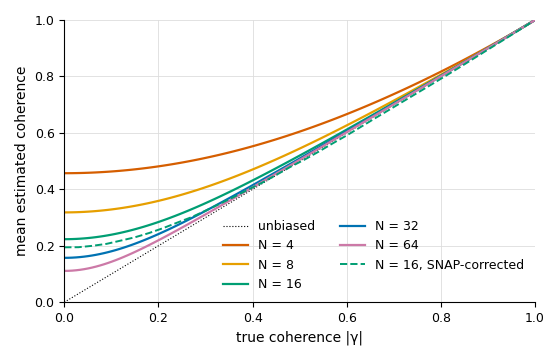

| SAR Concepts: Interferometric Coherence | |
Coherence measures how similar the complex signals of two SAR images are within a small neighbourhood, on a scale from 0 (unrelated) to 1 (identical). It sets the noise level of the interferometric phase, so it decides where an interferogram can be trusted. It is also a useful product in its own right for mapping change and land cover.
For two coregistered complex images s1 (Reference) and s2 (Secondary), the complex coherence is the normalised cross-correlation
γ = E[s1 s2*] / √( E[|s1|2] E[|s2|2] )
where E[·] is the expectation and * the complex conjugate. Its magnitude |γ| lies between 0 and 1; its phase is the interferometric phase. The expectation is unknown, so it is estimated by averaging over a window of N pixels:
|γest| = |Σ s1 s2* e−jφref| / √( Σ |s1|2 · Σ |s2|2 )
φref is the deterministic phase that varies inside the window: the flat-Earth phase and, in hilly terrain, the topographic phase. If it is not removed first, fringes inside the window partly cancel in the sum and the coherence comes out too low. The phase noise of the interferogram falls as coherence and the number of looks increase.
Coherence is reduced by several independent effects (geometric, Doppler, volume, temporal and thermal decorrelation), explained in InSAR Fundamentals.
The sample estimator is biased upward, strongly so for few looks and low coherence. Even two completely unrelated images give a mean estimate of about √(π/4N) for N independent looks: 0.22 for N = 16 and 0.09 for N = 100. Figure 1 shows the expected estimate against the true coherence.

Figure 1. Mean of the sample coherence versus true coherence for N independent looks (closed form of Touzi et al. 1999, checked by simulation). The dashed line is the N = 16 estimate after the bias correction used by the Coherence operator: it removes only a small part of the bias at low coherence. Above about 0.5 it slightly over-corrects (for N = 16, 0.6 becomes about 0.59).
Adjacent SLC pixels are not independent, because the data are oversampled and spectrally weighted. The number of independent looks is therefore smaller than the number of pixels in the window, and the real bias is larger than the curve for N = window pixels suggests. Above about 0.5 the bias is small for any practical window.
A larger window gives less bias and less noise but a coarser coherence map. It also mixes surfaces at their boundaries, so a coherent road through a forest is smeared out. Make the window roughly square on the ground. A Sentinel-1 IW SLC pixel is about 2.3 m in slant range (about 3.7 m on the ground at 39° incidence) by about 14 m in azimuth. A 10 × 10 pixel window therefore covers about 37 m × 140 m, while 10 range × 3 azimuth pixels covers about 37 m × 42 m.
| Surface | C-band, 6–12 days | L-band | Why |
|---|---|---|---|
| Open water | estimator floor (≈ 0) | estimator floor | surface changes between passes |
| Dense forest | low | moderate | volume and temporal decorrelation in the canopy; L-band penetrates to the more stable trunks and ground |
| Crops, grassland | variable | moderate to high | growth, harvest, ploughing and rain change the scatterers |
| Bare soil, rock, dry desert | high | high | stable scatterers |
| Urban areas | high | high | stable, bright man-made scatterers |
| Wet snow, active glaciers | low | low to moderate | melt and flow |
Table 1. Qualitative guide. Actual values depend on the temporal and perpendicular baselines, the season, the weather and the window size.
Coherence is commonly used as a quality mask. Pixels below about 0.2–0.3 carry phase that is mostly noise; exclude them from interpretation, unwrapping checks and time-series inversion. A drop in coherence between two otherwise stable pairs is itself a sign of change, such as flooding, building damage or harvest.
Two operators produce coherence from a coregistered complex stack. They write the same band name,
coh_<tag> (unit coherence), where the tag is
<subswath>_<pol>_<ref-date>_<sec-date> (subswath and polarisation are omitted when the product has none), but their defaults differ:
| Setting | Coherence (Coherence) | Interferogram (Interferogram) |
|---|---|---|
| Window | 10 range pixels; with Square Pixel on (default) the azimuth size is derived for a square ground footprint (about 3 for S1 IW) | 10 range pixels. In the SNAP Desktop and Graph Builder dialog, Square Pixel (on by default) fills in the azimuth size for a square ground footprint (about 3 for S1 IW) before the run; from gpt with default parameters the window is 10 × 10 because the operator itself ignores squarePixel. Coherence Window (m) overrides both. |
| Flat-Earth phase removed | yes | yes |
| Topographic phase removed | yes (DEM, default Copernicus 30 m) | no (Subtract topographic phase is off) |
| Bias correction | yes (Correct Coherence Bias) | no |
So the two numbers differ for the same pair. In hilly terrain the Interferogram coherence is lower because of the topographic fringes inside its window. At low coherence the Coherence result is lower because of the bias correction. If Interferogram was run from gpt with its defaults, its 10 × 10 window also gives a smoother, less biased map. Pick one operator and one window for any comparison.
The bias correction in the Coherence operator is
γc = max(0, |γest| − (1 − |γest|2) / (2N))
with N the number of pixels in the window. It is a small first-order adjustment (Figure 1), not a full removal of the bias. Above about 0.5 it slightly over-corrects (for N = 16, 0.6 becomes about 0.59).
Coherence on a detected (amplitude or intensity) stack is something else. In that case the Coherence
operator writes Coherence_sec<n> bands: a normalised correlation of real-valued images,
without bias correction. It is not interferometric coherence.
Goldstein Phase Filtering uses the coherence band to adapt its filter strength. Its optional coherence mask has a default threshold of 0.2. SNAPHU Export requires a coherence band, which SNAPHU uses to weight its unwrapping costs (see Phase Unwrapping).
Workflows: Sentinel-1 TOPS DInSAR and Stripmap DInSAR.